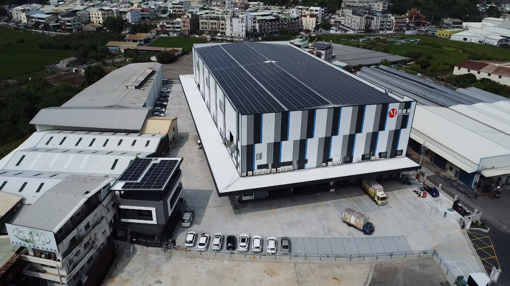

聯絡我們

我們是企業綠能轉型專家！晨世能源股份有限公司攜手源能資本，深耕台東縣金峰鄉嘉蘭村地熱專案，將前瞻綠色金融注入永續基載電力。如有任何商業合作、地熱開發、光儲整合方案諮詢，歡迎透過下方官方聯絡管道與我們連繫。
官方諮詢管道
- 專案合作：晨世能源股份有限公司 ✕ 源能資本
- 電子信箱 Email：snake19820220@gmail.com
- LINE 官方洽詢：點擊加入 LINE 諮詢最新進度
- Facebook 專頁：官方粉絲專頁
小農綠電台中示範廠位置
"
width="100%" height="400" style="border:0;" allowfullscreen="" loading="lazy">